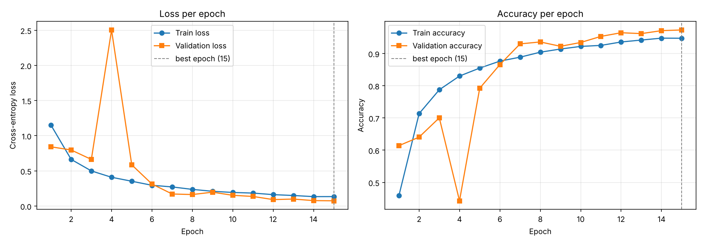
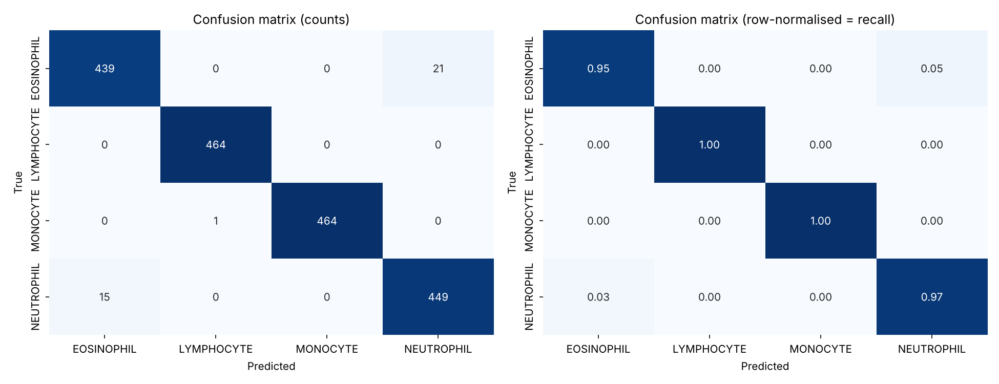
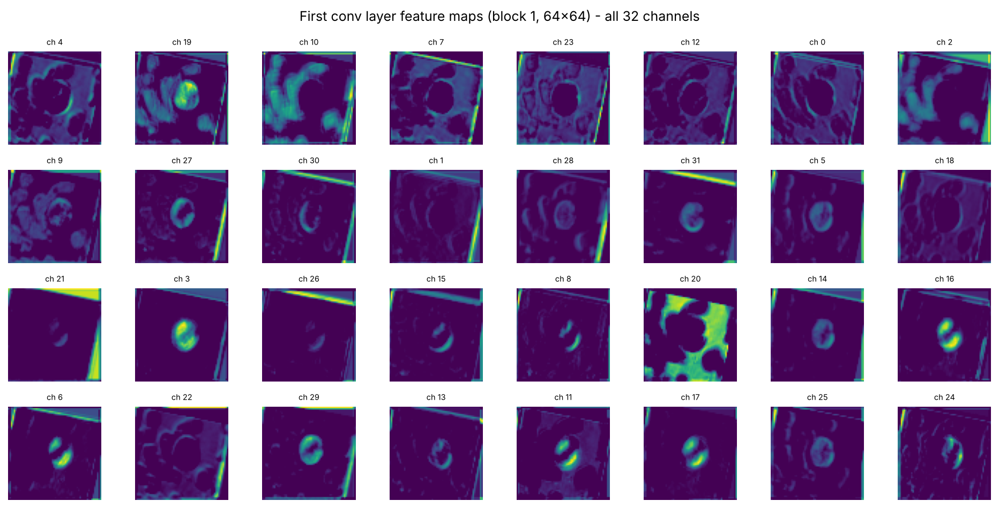
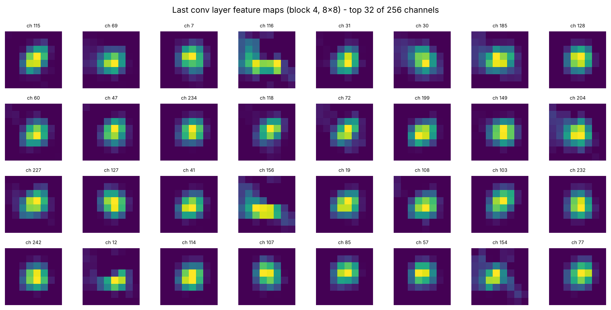

تمرین ۱: طراحی و تحلیل شبکه عصبی کانولوشن برای طبقهبندی گلبولهای سفید خون (BCCD)
نام و نام خانوادگی: ............................شماره دانشجویی: ....................درس: یادگیری عمیق پیشرفته
دقت Test98.0٪
Macro F10.980
بهترین Val Acc97.3٪
پارامترها424K
زمان آموزش (CPU)~10 دقیقه
۱. داده و پیشپردازش
داده: پوشههای TRAIN و TEST از dataset2-master (۱۲٬۴۴۴ تصویر، ۴ کلاس تقریباً متوازن) با هم ادغام و به نسبت
۷۰٪ / ۱۵٪ / ۱۵٪ (۸۷۳۹ / ۱۸۵۲ / ۱۸۵۳ تصویر) تقسیم شدند.
جلوگیری از نشت داده: این تصاویر از قبل Augment شدهاند و از هر تصویر میکروسکوپی اصلی دهها نسخهی چرخیده/قرینه وجود دارد (۳۴۸ تصویر اصلی).
تقسیم بهصورت گروهی بر اساس تصویر اصلی و طبقهبندیشده انجام شد تا هیچ نسخهای از یک تصویر همزمان در Train و Test نباشد؛
بنابراین دقت گزارششده روی سلولهایی است که شبکه هرگز ندیده است.
تغییر اندازه و نرمالسازی: تصاویر ۳۲۰×۲۴۰ دقیقاً به ۶۴×۶۴ تغییر اندازه داده شدند و مقادیر پیکسل ابتدا به [0, 1] و سپس به [−1, 1] نگاشت شدند.
افزایش داده (فقط Train): چرخش تصادفی ±۲۰°، قرینهسازی افقی (و عمودی)، RandomResizedCrop با مقیاس ۰٫۸ تا ۱ و جابهجایی ۵٪،
و ColorJitter ملایم برای شبیهسازی تفاوت رنگآمیزی لامها.
۲. معماری شبکه (پیادهسازی از صفر با PyTorch)
چهار بلوک کانولوشن متوالی، هر بلوک شامل Conv2d → BatchNorm2d → ReLU → MaxPool2d(2)؛ سپس Global Average Pooling،
دو لایه Fully Connected با Dropout، و لایه خروجی ۴ نورونی با تابع زیان CrossEntropyLoss.
بخش
لایه
سایز فیلتر / گام / Padding
کانال ورودی → خروجی
ابعاد خروجی (C×H×W)
پارامتر
ورودی
تصویر RGB
–
3
3×64×64
–
بلوک ۱
Conv2d + BN + ReLU
5×5 / 1 / 2
3 → 32
32×64×64
2,464
MaxPool2d
2×2 / 2
32
32×32×32
0
بلوک ۲
Conv2d + BN + ReLU
3×3 / 1 / 1
32 → 64
64×32×32
18,560
MaxPool2d
2×2 / 2
64
64×16×16
0
بلوک ۳
Conv2d + BN + ReLU
3×3 / 1 / 1
64 → 128
128×16×16
73,984
MaxPool2d
2×2 / 2
128
128×8×8
0
بلوک ۴
Conv2d + BN + ReLU
3×3 / 1 / 1
128 → 256
256×8×8
295,424
MaxPool2d
2×2 / 2
256
256×4×4
0
طبقهبند
Global AvgPool + Flatten
4×4
256
256
0
Dropout(0.5) + Linear + ReLU
–
256 → 128
128
32,896
Dropout(0.3) + Linear
–
128 → 4
4 (logits)
516
Softmax (درون CrossEntropy)
–
4
4
0
مجموع پارامترهای قابل آموزش
423,844
کانولوشنها بدون bias هستند (bias در BatchNorm وجود دارد). فیلتر ۵×۵ در لایه اول میدان دید بزرگتری برای یادگیری لبه و بافت فراهم میکند.
استفاده از Global Average Pooling بهجای Flatten کردن ۴۰۹۶ ویژگی، پارامترهای بخش FC را از حدود ۱٫۰۵ میلیون به ۳۳ هزار کاهش داد.
۳. آموزش و تنظیم فراپارامترها
بهینهساز Adam با lr = 0.001 و weight_decay = 1e-4، زمانبند Cosine Annealing، اندازه دسته ۶۴، حداکثر ۱۵ اپوک.
وزنهای مدلی که کمترین Loss اعتبارسنجی را داشت در best_model.pt ذخیره شد (Model Checkpoint) و Early Stopping با صبر ۵ اپوک فعال بود.
نسخه
تغییرات
بهترین Val Acc
Test Acc
مشاهده
۱ (پایه)
ورودی [0,1]، Flatten → FC(256)، بدون زمانبند و ColorJitter
0.766
0.751
Loss اعتبارسنجی بسیار ناپایدار (تا ۱۳٫۵)؛ توقف زودهنگام در اپوک ۱۰
۲
+ ورودی [−1,1]، ColorJitter، قرینه عمودی، weight decay، Cosine LR
0.933
0.935
آموزش پایدار شد
۳ (نهایی)
+ Global Average Pooling بهجای Flatten
0.973
0.980
کمترین Loss اعتبارسنجی؛ بهترین مدل در اپوک ۱۵
علت ناپایداری نسخه پایه این بود که Validation از تصاویر اصلی دیگری (با رنگآمیزی و نور متفاوت) تشکیل شده و لایه FC بزرگ روی جزئیات تصاویر آموزش
بیشبرازش میکرد. ColorJitter این تفاوت دامنه را شبیهسازی میکند و GAP ظرفیت بخش FC را کاهش میدهد.
۴. نمودارهای آموزش و اعتبارسنجی

شکل ۱ – Loss (چپ) و Accuracy (راست) دادههای آموزش و اعتبارسنجی در هر اپوک؛ خطچین، اپوک ذخیره بهترین مدل است.
Loss آموزش بهطور یکنواخت از ۱٫۱۵ به ۰٫۱۳ کاهش یافت و دقت آموزش به ۹۴٫۷٪ رسید. Loss اعتبارسنجی در اپوک ۴ یک جهش موقت داشت
(نرخ یادگیری هنوز بالاست و آمار BatchNorm پایدار نشده)، اما با کاهش نرخ یادگیری توسط Cosine Annealing از اپوک ۶ به بعد هموار شد و به ۰٫۰۷۴ رسید.
دقت اعتبارسنجی کمی بیشتر از دقت آموزش است؛ چون روی داده آموزش Augmentation و Dropout فعالاند (آموزش سختتر است) ولی در ارزیابی نه.
نزدیکی دو منحنی و کاهش همزمان هر دو Loss نشان میدهد که بیشبرازش قابل توجهی وجود ندارد.
چون Loss اعتبارسنجی تا اپوک آخر هنوز رو به کاهش بود، Early Stopping فعال نشد و بهترین مدل همان اپوک ۱۵ است.
۵. ارزیابی روی داده Test

شکل ۲ – ماتریس درهمریختگی روی ۱۸۵۳ تصویر Test (چپ: تعداد، راست: نرمالشده بر اساس سطر).
کلاس
Precision
Recall
F1
تعداد
EOSINOPHIL
0.967
0.954
0.961
460
LYMPHOCYTE
0.998
1.000
0.999
464
MONOCYTE
1.000
0.998
0.999
465
NEUTROPHIL
0.955
0.968
0.962
464
Macro avg
0.980
0.980
0.980
1853
Accuracy
0.980
لنفوسیت و مونوسیت تقریباً بدون خطا تشخیص داده شدند (F1 ≈ ۰٫۹۹۹)؛ لنفوسیت هستهی گرد و بزرگ با سیتوپلاسم کم دارد و مونوسیت هستهی لوبیایی
و سیتوپلاسم زیاد؛ این الگوهای شکلی حتی در ۶۴×۶۴ کاملاً متمایزند. تنها خطای این دو کلاس، یک مونوسیت است که لنفوسیت پیشبینی شده.
تقریباً همه خطاها (۳۶ از ۳۷) بین ائوزینوفیل و نوتروفیل است (۲۱ ائوزینوفیل → نوتروفیل و ۱۵ نوتروفیل → ائوزینوفیل). هر دو گرانولوسیتاند و
هستهی چندلوبی دارند؛ تفاوت اصلی آنها رنگ و اندازهی گرانولهای سیتوپلاسم (نارنجی-قرمز در ائوزینوفیل) است که با کوچککردن تصویر به ۶۴×۶۴ تا حدی از بین میرود.
بنابراین Recall این دو کلاس (۹۵٫۴٪ و ۹۶٫۸٪) پایینتر از بقیه است. استفاده از وضوح بالاتر احتمالاً این خطا را کاهش میدهد.
۶. مصورسازی نقشههای ویژگی
یک تصویر ائوزینوفیل از داده Test (که با احتمال ۱٫۰۰ درست طبقهبندی شد) به شبکه داده شد و با forward hook، خروجی لایه کانولوشن اول
(بلوک ۱ پس از BN+ReLU، ۳۲ کانال ۶۴×۶۴) و لایه کانولوشن آخر (بلوک ۴ پس از BN+ReLU، ۲۵۶ کانال ۸×۸) استخراج شد.

شکل ۳ – هر ۳۲ نقشه ویژگی لایه کانولوشن اول (مرتبشده بر اساس میانگین فعالسازی).

شکل ۴ – ۳۲ کانال پرفعالیت از ۲۵۶ کانال لایه کانولوشن آخر (۸×۸).
تحلیل تفاوت دو لایه:
لایه اول – ویژگیهای سطح پایین با وضوح مکانی کامل: نقشهها هنوز شبیه تصویر ورودیاند و با چشم قابل تفسیرند.
برخی کانالها هستهی بنفش را روشن میکنند (ch 3، ch 19، ch 16)، برخی لبه و مرز هسته را به شکل حلقه یا هلال نشان میدهند (ch 27، ch 30، ch 8)،
برخی به زمینه و گلبولهای قرمز پاسخ میدهند (ch 20، ch 10) و چند کانال لبهی تیز نوار سیاه حاصل از چرخش تصویر را آشکار میکنند (ch 21، ch 31).
پس لایه اول مانند مجموعهای از آشکارسازهای لبه، رنگ و بافت عمل میکند.
لایه آخر – ویژگیهای سطح بالا و معنایی: پس از سه مرحله MaxPooling وضوح به ۸×۸ رسیده و شکل سلول دیگر دیده نمیشود. تقریباً همه کانالهای
پرفعالیت فقط در مرکز تصویر، محل هستهی گلبول سفید روشناند و زمینه و گلبولهای قرمز کاملاً حذف شدهاند. میدان دید هر نورون بخش بزرگی از تصویر را
میپوشاند و هر کانال یک الگوی انتزاعی (مانند شکل و لوبهای هسته یا دانههای سیتوپلاسم) را کد میکند. فعالسازیها تُنُکاند: حدود ۶۸٪ مقادیر صفرند
و ۵۸ کانال از ۲۵۶ کانال برای این تصویر تقریباً خاموشاند.
جمعبندی: با عمیقتر شدن شبکه، ابعاد مکانی کم و تعداد کانالها زیاد میشود و نمایش از «کجا لبه/رنگ هست» به «چه نوع سلولی در تصویر است» تغییر میکند.
همچنین شبکه بدون هیچ برچسب مکانی یاد گرفته است روی گلبول سفید تمرکز کند و زمینه را نادیده بگیرد.
۷. نتیجهگیری
یک CNN چهاربلوکی سبک (۴۲۴ هزار پارامتر) که از صفر آموزش داده شد، در کمتر از ۱۱ دقیقه روی CPU به دقت ۹۸٫۰٪ و Macro-F1 برابر ۰٫۹۸۰ روی داده Test
(بدون نشت داده) رسید. بیشترین بهبود از نرمالسازی ورودی به [−1,1]، افزایش داده رنگی، زمانبند نرخ یادگیری و جایگزینی Flatten با Global Average Pooling بهدست آمد.
خطای باقیمانده عمدتاً بین ائوزینوفیل و نوتروفیل است که به جزئیات رنگی گرانولها وابستهاند.